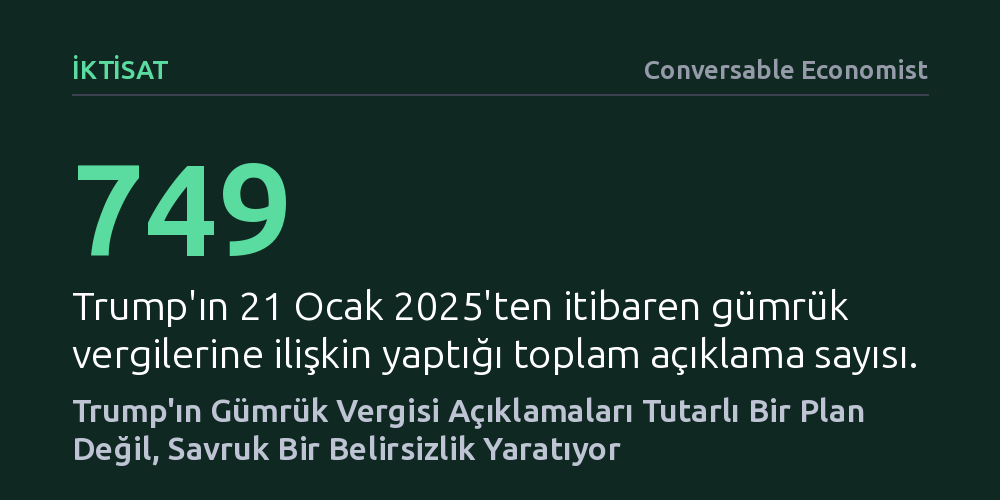

IKTISAT · Conversable Economist · 2026-10-16
Brown Üniversitesi araştırmacıları, Trump'ın 2025 başından bu yana gümrük vergilerine ilişkin 749 ayrı beyanını ve 341 vergi değişikliğini haritalandırdı. Bulgular, ABD ticaret politikasının tutarlı bir plandan ziyade öngörülemez ve savruk bir karmaşaya dönüştüğünü gösteriyor.
Gümrük tarifelerinin hesaplanmış stratejik bir korumacılık programı değil, anlık beyanlarla sürekli yön değiştiren istikrarsız bir belirsizlik kaynağı olduğunu somut verilerle ortaya koyar.

Brown Üniversitesi Küresel Bağlantılar Laboratuvarı bünyesinde çalışan ekonomistler Şebnem Kalemli-Özcan, Can Soylu ve Muhammed A. Yıldırım, ABD Başkanı Donald Trump'ın 21 Ocak 2025'ten itibaren gümrük vergilerine ilişkin kamuoyu önünde telaffuz ettiği her bir vergi oranını titizlikle kayıt altına aldı. Araştırma ekibi; resmi konuşmalardan televizyon mülakatlarına, Truth Social paylaşımlarından başkanlık kararnamelerine ve Beyaz Saray bilgi notlarına kadar başkanın bir vergi oranından bahsettiği tüm iletişim kanallarını taradı.
Elde edilen veriler benzersiz bir yoğunluğa işaret ediyor: Kısa süre içinde 749 ayrı vergi açıklaması kayda geçti ve bu açıklamalar 341 farklı gümrük vergisi değişikliğini kapsadı. TiRADE (Açıklama, Beyanat ve Eylemlerde Gümrük Vergisi Oranları) adı verilen bu kapsamlı veri tabanı, tehdit aşamasında kalan oranlar ile fiilen yürürlüğe konan tarifeleri ayrı ayrı izleyerek ticaret politikasındaki olağanüstü hareketliliği gözler önüne seriyor.
TiRADE çalışması, kamuoyuna duyurulan vergi beyanlarını görselleştirerek tehditler ile somut icraatlar arasındaki farkı net bir şekilde ortaya koyuyor. Veri setinde mavi noktalar ilan edilen veya tehdit olarak öne sürülen tarifeleri gösterirken, yeşil noktalar fiilen uygulanmaya başlanan gümrük vergilerini temsil ediyor. Birçok açıklamanın farklı mecralarda mükerrer biçimde tekrarlanması, piyasalara yansıyan bilgi kirliliğini ve belirsizlik hissini daha da artırıyor.
Veri tabanının sunduğu görsel tablo, gümrük vergisi kararlarındaki aşırı oynaklığı ve tutarsızlığı çarpıcı biçimde belgeliyor. Hangi açıklamanın gerçek bir mevzuat değişikliğine dönüşeceği, hangisinin ise yalnızca müzakerelerde koz elde etmek amacıyla ortaya atılmış bir sosyal medya çıkışı olarak kalacağı önceden kestirilemiyor.
İktisatçı Timothy Taylor, geniş tabanlı gümrük vergisi artışlarına ilkesel olarak karşı çıkılabileceğini, hedefe yönelik dar kapsamlı tarifelerin ise her somut durum özelinde ayrı ayrı değerlendirilmesi gerektiğini ifade ediyor. Ancak Trump yönetiminin 2025 başından itibaren sergilediği pratik, klasik ekonomik korumacılık ya da stratejik ticaret teorisiyle bağdaşmıyor.
Ortaya çıkan tablo, uzun vadeli hesaplara dayanan tutarlı bir ekonomik programdan ziyade, yazarın tespitiyle "savruk, tekleyen ve anlık hislerle yürütülen bir karmaşa" görüntüsü veriyor. Sürekli değişen oranlar ve öngörülemeyen tehditler, küresel tedarik zincirleri ve uluslararası yatırımcılar için hesaplanamaz bir maliyet ve belirsizlik alanı oluşturuyor.